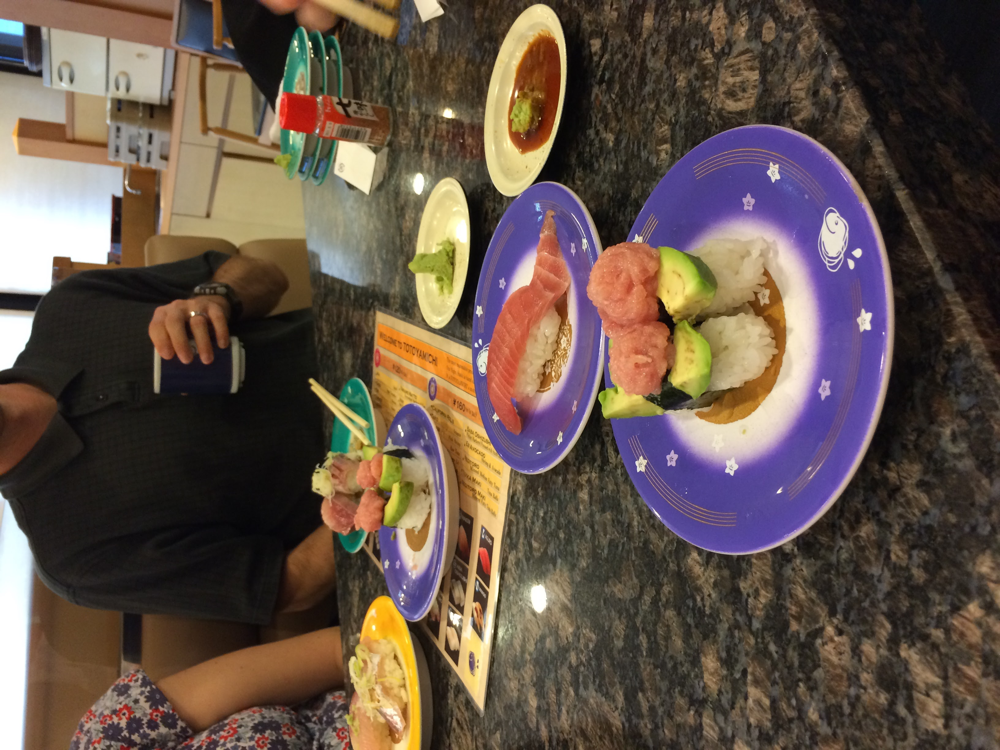
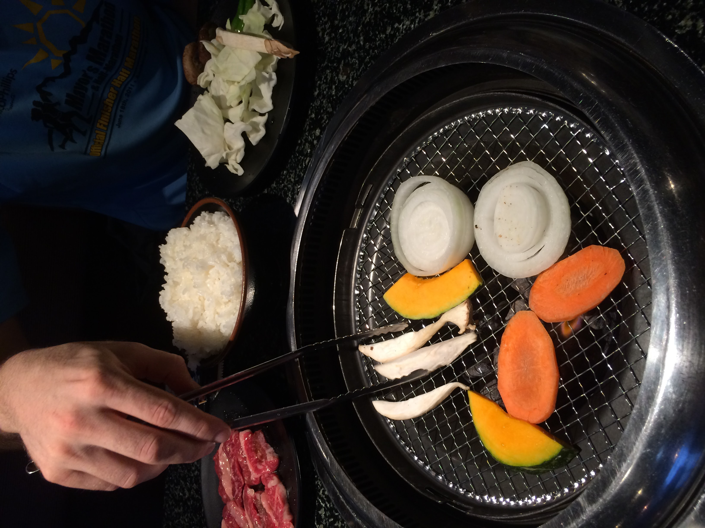
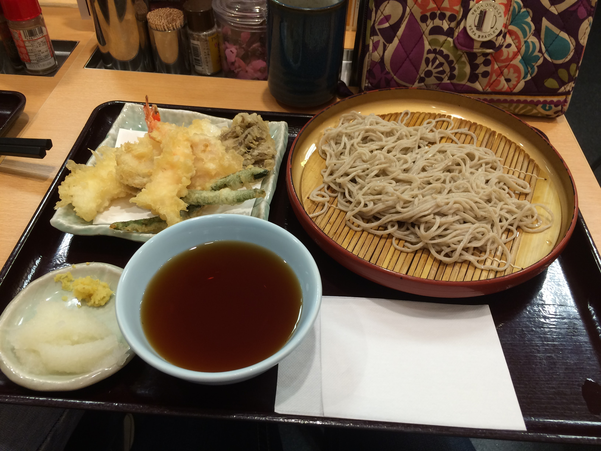
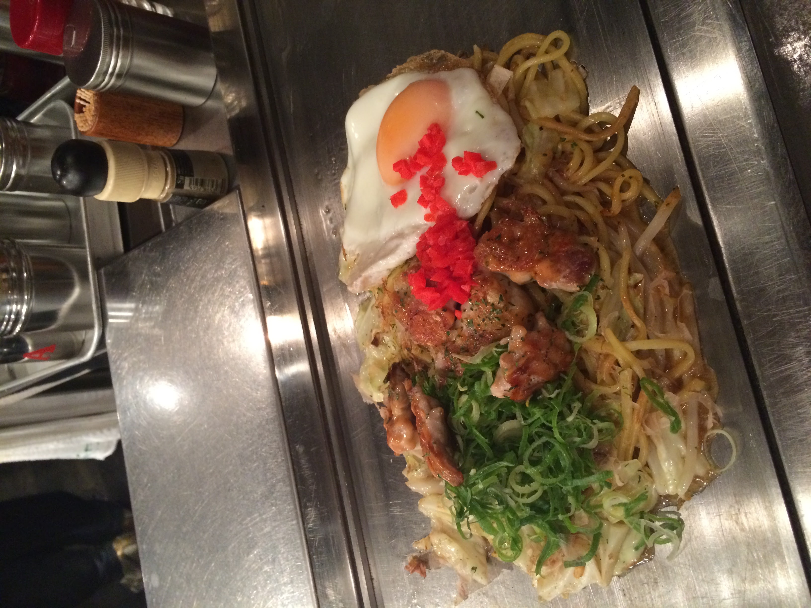
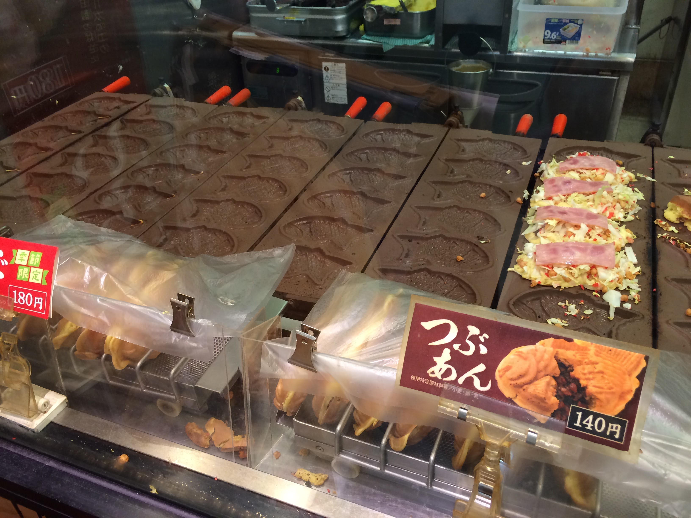
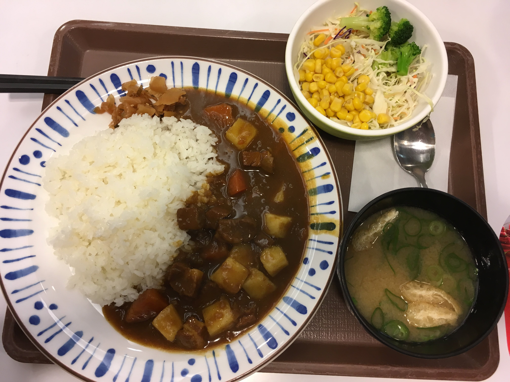
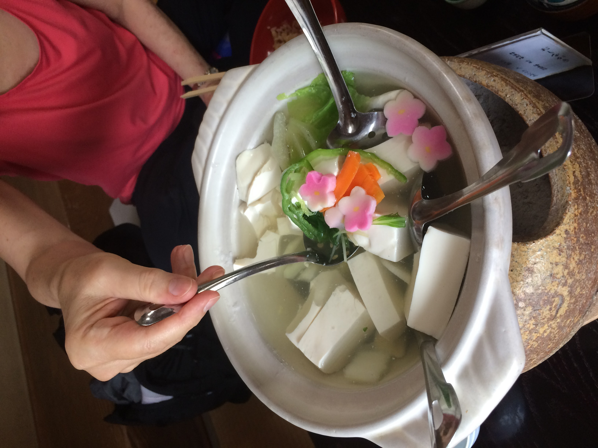
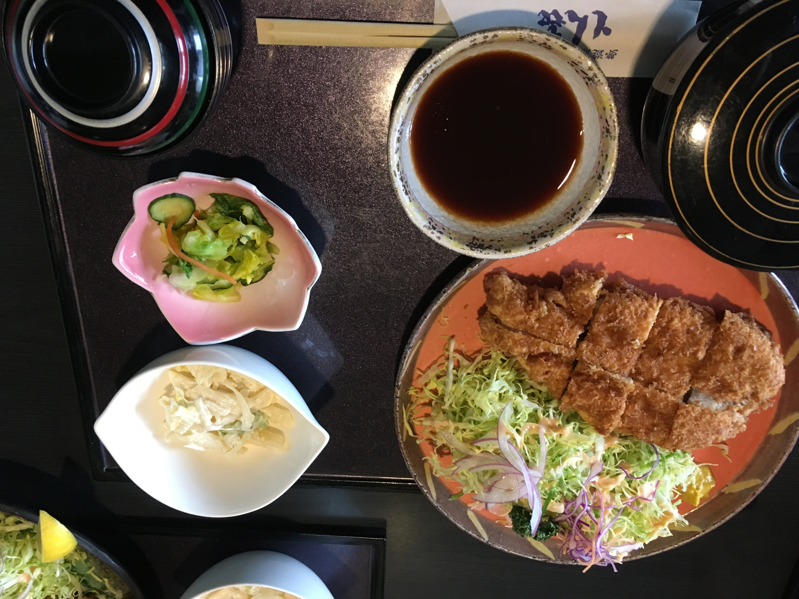
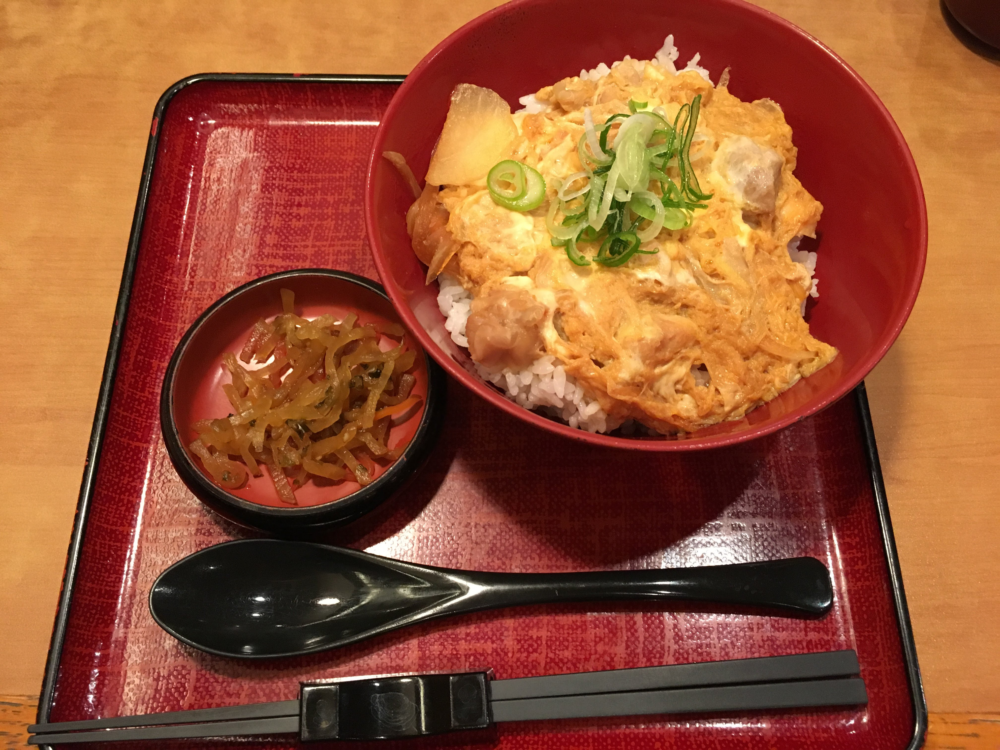
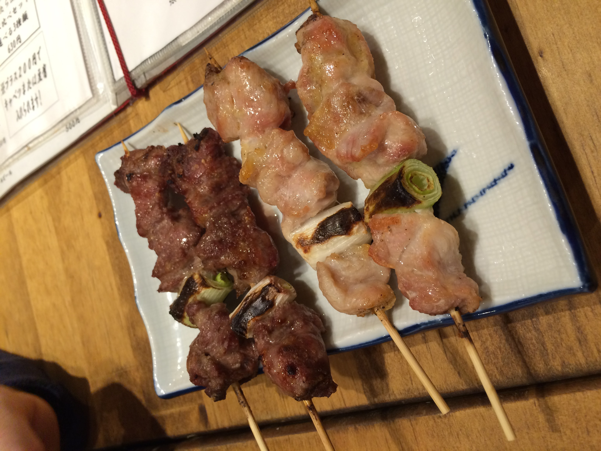

Themed cafes in Japan:
- The Lockup
This is a prison-themed cafe where you are seved in a 'prison cell' and there is a monster show.
- Alice in Wonderland Cafe
There are a few different 'Alice in Wonderland' themed cafes in and around Tokyo.
- Ninja Restaurant Akasaka
The Ninja Restaurant in Akasaka is very famous among tourists.
You will get a "ninja training" lesson and the food is ninja themed.
- Fishing Restaurant Zauo
There are a number of 'fishing restaurants' in Japan.
You catch a fish, and then you can choose how you would like it cooked.
- Robot Restaurant
The highlight is the wild, colorful, 90-minute robot show.
- Owl Cafe Hoot Hoot
There are many restaurants and cafes where you can sit and eat with animals!
Besides owls and falcons, there are reptile cafes, rabbit cafes, and even a goat cafe!
There are many delicious types of food to eat in Japan! It's fun to try them all.
Here are a few of my favorite dishes:

When many people hear the word "sushi" they think of raw fish, but many kinds of sushi don't contain fish at all!
The word "sushi" is referring to the vinegar rice, and sushi can be served with cooked fish, and even no fish at all!
Many sushi restaurants in Japan are "kaiten-zushi", which means "conveyor belt" sushi.
These restaurants serve plates of sushi that are delivered to tables on a conveyor belt that loops around the restaurant.
You can often order other dishes, like soup, tempura, or dessert.

"Yaki" means grill and "niku" means meat, so "yakiniku" is a restaurant where you can eat grilled meat.
Yakiniku restaurants are fun to visit with friends.
You sit at a table with a charcoal grill in the center, and cook your food together.
You can order many types of meat, seafood, and even veggies.

"Soba" is a special type of noodle made from buckwheat.
It's common to eat soba cold in the summer, and often served together with tempura.
It is traditional to eat soba on New Year's Eve, called "Toshikoshi soba".

Another popular way to eat soba is "yakisoba", which is grilled soba noodles.
The soba noodles are sauteed with veggies and meat, and often come with an egg on top.
This dish is often sold from vendors at festivals, and it's a popular dish in the Kansai region.

A special snack or dessert is a pastry shaped like a fish, called "taiyaki".
The outer layer is similar to pancake or waffle batter.
Traditionally it is filled with sweet red bean paste.
You can also find taiyaki with chocolate or even stuffed like a sandwich.
They are popular 'street vendor' food and often served at markets and festivals.

Curry restaurants are very common in Japan.
Japanese curry is traditionally made with carrots, potatos, and beef.
Some people like to have an egg in their curry!
Other popular toppings are fried kabocha squash, cutlet, or pickled vegetables.

"Shojin Ryori" is the traditional food of Buddhist monks in Japan.
It is made without meat, fish, or animal products.
You can eat a meal like this at some temples, and a few specialty restaurants also.

"Katsu" is a breaded and fried cutlet, usually pork or chicken.
It is often served with curry.
It is eaten with 'tonkotsu sauce', a sweet brown sauce made from pureed fruit.

"Donburi" means bowl, and is a type of food served in a bowl with rice and other ingredients.
It's commonly abbreviated as 'don' and used in connection with other words to describe the dish.
For example, 'gyūdon' is a dish with beef and rice, and 'katsudon' is a dish with katsu and rice.
My favorite type is 'oyakodon', which is sauteed chicken, eggs, and onions, served over rice.

"Yakitori" means grilled chicken, and it is served on small bamboo skewers.
It is often sold at festivals and by street vendors.
There are many varieties of yakitori made with different meats, and even some with only vegetables!

This has the weather, and time, in japan.
The current date & time in Tokyo is: